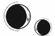

CAPÍTULO 69
Junius 1789
Una niña.
Helena ni siquiera había considerado la posibilidad de comprobar el sexo del bebé. Recordaba que Lila había querido saberlo, pero ella tenía tantos asuntos por los que preocuparse que no se había parado a pensar en ello.
De pronto, su mente pareció adquirir plena consciencia del embarazo, lo cual le resultó abrumador. Hasta ese momento, el bebé no había sido más que un concepto, poco más que una posibilidad, pero ahora era una niña.
Stroud le presionó la parte baja de la zona pélvica con más firmeza y sus facciones se ensombrecieron.
—Vaya decepción. Queríamos un varón —dijo lanzándole una mirada de reproche, como si ella lo hubiera hecho a propósito.
Helena no mostró ninguna emoción y mantuvo la vista fija en el dosel de la cama, como si estuviera demasiado débil para tener una opinión al respecto.
Stroud se volvió hacia Kaine.
—El Sumo Nigromante no va a estar nada contento. Una niña es… inadmisible. Prácticamente impensable.
—Siempre hubo un cincuenta por ciento de probabilidades de que lo fuera —apuntó él con aparente indiferencia—. Según tenía entendido, llegados a este punto, bastará con que presente habilidades animánticas.
—Sí, pero no es un varón —insistió Stroud, como si estuviera hablando de algún experimento fallido—. No le va a hacer ninguna gracia. —Se llevó una mano a la frente y dejó escapar una sonora exhalación—. Aunque ya es demasiado tarde. No podemos permitirnos volver a empezar y, en las condiciones en que se encuentra, no creo que sobreviva a un segundo intento. Tendremos que seguir adelante. En cuanto perfeccionemos el procedimiento, estoy segura de que conseguiremos un niño. Esto será solo temporal. ¿La tenéis bien vigilada? ¿Os estáis asegurando de que no se altere?
—Sí —respondió Kaine apretando los dientes y señalando la puerta—. ¿Por qué no continuamos la conversación en otro lado?
—Claro, claro —dijo Stroud con impaciencia antes de recoger sus cosas y salir por la puerta, seguida de cerca por Kaine.
Helena se incorporó en cuanto se cerró la puerta, se miró el vientre y se tocó el bultito que crecía entre sus caderas. No notaba nada sin la ayuda de la resonancia; todavía era demasiado pronto para que se moviera.
Una niña.
Kaine apenas mencionaba el embarazo salvo para hablar de sus efectos sobre la salud de ella. Era su embarazo, su bebé. Se negaba a tratarlo como si tuviera algo que ver con él.
Aun así, no podía evitar preguntarse si a él le importaría que fuera una niña. Eran los hijos varones quienes conservaban el apellido familiar y quienes heredaban los gremios. Las niñas con talento para la alquimia solían considerarse un desperdicio, pues solo servían para establecer alianzas matrimoniales. Aunque, siendo una hija ilegítima, tampoco importaba mucho.
Se le formó un nudo tenso en el estómago.
Cuando Kaine regresó, se acercó a ella con cautela y le puso las manos sobre los hombros. Helena notó su resonancia activarse en las terminaciones nerviosas y supo que estaba buscando algo.
—Estoy bien. El bebé no me está haciendo nada si eso es lo que te preocupa.
—Podría empeorar más adelante —dijo mientras la estudiaba con atención—. Y tú…
Le tocó el lateral de la cabeza. Era evidente que estaba calculando los años que Helena había pasado en el hospital y el número de pacientes a los que había atendido para determinar cuánto tiempo le quedaba.
Helena negó con un gesto y lo agarró de la mano.
—Una vez me dijiste que la vitalidad no se puede arrebatar de esa manera. La vivemante que trató a tu madre dijo que el embarazo le había afectado tanto porque había estado abusando de su poder sin darse cuenta. Lila también es una vivemante y Rhea no tuvo problemas durante la gestación.
Kaine la miró como si se le estuviera escapando de entre los dedos sin poder hacer nada para evitarlo.
—Además, me has hecho algo, ¿no? —Helena lo estudió con atención—. Pensaba que había sido un sueño, pero utilizaste la Gema de alguna manera.
—Todavía no estoy seguro de que ayudara mucho. Estabas al límite y entraste en coma. Y lo peor es que yo no estaré ahí cuando salgas de cuentas para…
—Tendré cuidado. Los síntomas del Estrago son fáciles de reconocer y no aparecen de un día para otro.
Kaine asintió despacio, pero Helena sabía que incluso el más mínimo riesgo era demasiado para él.
—Es una niña —dijo al cabo de unos instantes para tratar de distraerlo.
Cuando repitió el mismo movimiento de cabeza distraídamente, a Helena se le cayó el alma a los pies. Si había pasado tanto tiempo preocupada por el bebé cuando apenas existía era porque la pérdida de memoria le había hecho creer que era lo único que le quedaba en el mundo. Kaine no se había equivocado al decir que estaba desesperada por tener a alguien a quien amar. Parecía que ese era su mayor punto débil, el defecto que más comprometía su integridad.
Ahora que tenía tantas preocupaciones en la cabeza, el embarazo había pasado a un segundo plano, convencida de que el asunto podría esperar, pero no era así. Siempre había estado allí y ahora tenía una niñita que nadie, salvo ella, parecía querer.
Frente a la indiferencia de Kaine, Helena sintió crecer en su interior la necesidad de protegerla. Soltó la mano de Kaine y fue hacia el armario para vestirse con tranquilidad.
—¿Qué haces? —le preguntó Kaine mientras ella se abrochaba el vestido.
—Voy a salir a dar un paseo —respondió sin mirarlo—. Le vendrá bien a la niña.
—Te acompaño.
Helena no estaba segura de querer su compañía si iba a seguir mirándola con esa expresión sombría, pero asintió. Kaine le retiró el anulitio de los grilletes y, en vez de conducirla al patio, la llevó hasta la parte trasera de la casa, donde se extendía el laberinto de setos y los jardines abandonados. Había un camino cubierto por un toldo de rosales trepadores.
—¿Y si Morrough nos ve? —preguntó con vacilación.
—Solo vigila el patio.
Caminaron en silencio hasta llegar a un manzano retorcido, de flores pálidas y hojas verdes y frescas. Kaine se detuvo en seco y lo observó con detenimiento.
—Solía trepar a este árbol cuando era pequeño. Lo recordaba más grande.
Nunca había hablado de su pasado sin que ella se lo pidiera. Lo único que sabía sobre su infancia era que había sido un niño muy solitario con un padre ausente, una madre enferma y unos sirvientes cuyos fantasmales recuerdos todavía lo acompañaban.
—Me quedé atascado justo aquí una vez —dijo tocando una rama larga que a Helena apenas le llegaba a la altura de la cintura—. Estaba convencido de que me caería y me abriría la cabeza si me movía, así que me pasé medio día llamando a gritos a mi madre. Se suponía que no debía levantarse de la cama, pero a mí me daba igual. Solo quería que viniera a buscarme y que viera lo alto que había trepado. Al final, acabó haciéndome caso. —Bajó la mano—. Cuando crecí, empecé a sentirme muy culpable por aquello. La de tonterías que uno hace de niño y no entiende lo que sucede a su alrededor.
Helena no conseguía imaginar a Kaine de pequeño.
Él señaló una abertura entre los setos.
—Si vamos por ahí, llegaremos hasta un estanque donde solía haber todo tipo de ranas y salamandras. Siempre pensé que podría llegar a domesticarlas y enseñarles a hacer trucos.
Le contó todo aquello con voz inexpresiva, como si estuviera recitando un texto de memoria. Miró a su alrededor.
—Debería llevarte a ver los pináculos —dijo al cabo de unos instantes—. Creo que me acordaría de muchas más anécdotas allí arriba. Es extraño… No sé por qué me cuesta tanto evocar ciertos momentos.
Emprendió el camino de regreso mirando a su alrededor como si estuviera buscando algo por el jardín. Luego se detuvo y movió los labios unas cuantas veces antes de encontrar la voz.
—Mi madre se llamaba Enid.
Helena asintió. Eso sí lo recordaba.
Kaine contempló el jardín y apretó los puños.
—Ese nombre siempre… me ha gustado.
Helena empezó a entender qué era lo que intentaba hacer. Se estaba esforzando por darle lo que quería. Para él, aceptar que iba a tener un bebé, una niña, implicaba también asumir que no viviría para conocerla. Le estaba contando todo aquello para que Helena pudiera hablarle de él a su hija, para que pudiera contarle cómo era antes de matricularse en la Academia y de que estallara la guerra.
Desvió la mirada hacia la ciudad que se alzaba por encima de los árboles.
—He transferido todo el dinero que he podido a una cuenta extranjera, pero no sé qué pasará con la propiedad y la herencia o si podréis reclamarlas si alguna vez regresáis a Paladia. Puedo intentar informarme si quieres.
A Helena se le cerró la garganta y le empezaron a temblar los hombros. Sus pulmones se negaban a cooperar.
Kaine la miró.
—Nos hemos alejado demasiado.
Ella negó con la cabeza pese a no poder moverse. Tenía tantas cosas que quería decirle que no se veía capaz de hablar sin desmoronarse.
—¿Crees que podrás volver por tu propio pie? —preguntó dando un paso hacia ella.
Cuando consiguió negar con la cabeza, él le rodeó la cintura con cuidado y la alzó en sus brazos. Helena se agarró a su cuello con ambas manos y enterró el rostro en su hombro.
—Enid es un buen nombre —consiguió decir al final con voz ronca—. A mí también me gusta.
Kaine se había tumbado en la cama con Helena, que tenía la cabeza apoyada sobre su pecho y seguía con la vista el movimiento de las manecillas del reloj. Se le agotaba el tiempo. Siempre igual. Nunca tenía tiempo de sobra. Lumitia alcanzaría la plena latencia en menos de un mes.
Kaine también estaba despierto y le dibujaba figuras con las yemas de los dedos por el brazo. Helena se incorporó, se inclinó hacia delante y lo besó despacio para grabarse en la memoria la sensación de sus labios al tocarse y la caricia de su nariz contra la mejilla.
Le enterró los dedos en el pelo para profundizar el beso, ansiosa por perderse en él. Ya se había sentido así antes. Cuando Kaine levantó una mano para cerrarla en torno a su cuello, una oleada de calor la hizo estremecer y le encendió la sangre. Había enterrado los recuerdos de aquellos momentos en las profundidades más recónditas de su mente.
Se pegó más a él y deslizó una mano hacia abajo por su pecho, pero Kaine la agarró de inmediato de la muñeca y la detuvo.
—¿Qué estás haciendo?
Ella se incorporó y respiró hondo.
—Quiero acostarme contigo —dijo, sintiendo cómo le ardían las puntas de las orejas por haberlo admitido en voz alta, pero sin apartar la mirada de él. Quería ver su reacción.
En su mirada había un brillo impertérrito, visible incluso bajo la tenue luz de la luna.
—No.
Helena tiró de su muñeca para que la soltara, y él obedeció. Entonces se abrazó las rodillas contra el pecho. Su corazón latía con fuerza, a un ritmo irregular.
—No quiero que nuestra última vez sea cuando me… —Tragó saliva—. Cuando ambos nos vimos obligados a tener relaciones.
—No —repitió.
A Helena se le crisparon los dedos, pero asintió y se quedó en esa posición mientras observaba cómo las sombras que bailaban por la estancia se intensificaban.
—¿Por qué? —preguntó Kaine al cabo de un instante.
—Te lo acabo de explicar.
—Pero contigo nunca hay una sola explicación.
—No recuerdo cómo era —admitió tras permanecer un rato callada—. Antes de todo esto. Sé que nos acostábamos, pero cuando… cuando intento recordar los detalles siempre acabo volviendo a esta casa. Si nunca recupero esos recuerdos, esto será lo único que me quede.
Se interrumpió al pensar en todas las formas en que la situación podría torcerse, pero no había vuelta atrás. Lo que habían compartido había desaparecido y no era algo que pudiera recrearse así, sin más, porque corrían el riesgo de destruir el frágil refugio que habían conseguido mantener en los brazos del otro.
—Da igual —dijo negando con la cabeza—. Tienes razón, ha sido una mala idea.
Kaine no respondió, pero, cuando volvió a besarla al día siguiente, algo había cambiado.
Había cierta avidez en él.
Cuando regresó después de pasar unos días fuera, la tocó con una pasión abrasadora; le arañó el cuello con los dientes y le enterró el rostro en la piel para inhalar su esencia. Helena de pronto se vio inundada por una ola de calor y dejó escapar un gemido tembloroso mientras se derretía contra él.
—Dime que pare —le pidió moviendo los labios contra su garganta—. Dime que pare.
Ella tiró de él hacia sí.
—Sigue. No quiero que pares.
Kaine le deslizó los dientes por la piel y alcanzó los botones de su vestido para ayudarla a desabrochárselo. Cuando sus dedos encontraron la piel desnuda bajo la tela, Helena se estremeció, desesperada por sentir su contacto.
Solía ser así. Ahora que experimentaba aquella sensación de nuevo, recordaba cómo la había tocado, la manera en que la había sostenido entre sus brazos y la había devorado.
Kaine le besó el cuello hasta que ella dejó caer la cabeza hacia atrás entre jadeos. Helena le acarició la curva de la mandíbula y los hombros, y el recuerdo físico de su cuerpo despertó bajo su piel.
Tiró de su rostro para acercarlo al suyo.
—Te quiero —le dijo entre besos—. Ojalá te lo hubiera dicho mil veces antes.
Encontró los botones de su camisa, se los desabrochó y empezó a desnudarlo acariciándole la piel desnuda, ansiosa por disfrutar de su calidez.
—Dime que pare y lo haré —insistió él con voz ronca.
—No pares.
A Helena le temblaban las manos cuando recorrió con los dedos esas líneas que tan bien conocía grabadas en su espalda. La ropa que los separaba seguía cayendo entre ellos y el deseo tiraba de su cuerpo desde lo más profundo de su ser.
Kaine la tumbó en la cama y se colocó encima de ella para besarle los pechos, pero entonces la situación dio un giro radical. Helena estaba allí tumbada, inmóvil y en silencio, paralizada por el miedo que le daba pensar en lo que ocurriría si reaccionaba. Veía el dosel sobre su cabeza, el cuerpo que se cernía sobre ella, y todo lo que sentía se transformó en una espantosa traición.
Se le helaron las manos, los ojos se le abrieron con violencia y las costillas se le cerraron hasta asfixiarla.
—Para.
Fue como si le hubieran arrancado aquella dolorosa palabra de dentro y, con ella, también sus pulmones.
Kaine se detuvo en seco y se apartó enseguida, pero ella lo abrazó y se negó a soltarlo. Enterró el rostro en su hombro y respiró su aroma para recordar que estaba con él, que Kaine era suyo y no podía dejarlo ir.
Se estremeció y ahogó un sollozo.
Él ni siquiera se atrevía a respirar.
—Ha sido solo un momento —lo tranquilizó con la respiración agitada—. La situación me sobrepasó, pero ahora que sé que puedo pedirte que pares todo irá mejor. Estaba disfrutando. —Siguió abrazada a él—. De verdad, estaba disfrutando. Ha sido un momento, pero… Lo estaba disfrutando.
Sin embargo, Kaine forcejeó hasta que Helena por fin cedió. Se incorporó despacio, con el rostro tenso y las pupilas tan contraídas que sus ojos recordaban al hielo picado. Parecía muy frágil.
Y estaba cubierto de cicatrices. Helena extendió una mano temblorosa y le tocó la que le surcaba prácticamente todo el torso.
—¿Qué te ha hecho?
—Todo lo que ha querido —dijo evitando su mirada.
Helena apoyó la cabeza en su hombro y entrelazó un brazo con uno de los suyos para quedarse allí, en la creciente oscuridad, entre los restos de la relación que una vez habían compartido. Solo necesitaban un poco más de tiempo.
Helena había leído todas las obras atribuidas a Cetus y las había organizado en función de su legitimidad. Tenía la sensación de que empezaba a entender los fundamentos de su enfoque alquímico, pero necesitaba encontrar una fuente más reciente, y sabía exactamente dónde hacerlo.
Cuando Kaine se marchó, salió de la habitación y recorrió la casa despacio, evitando las sombras y utilizando las paredes como punto de referencia. Como conocía qué estancias estaban controladas por Morrough, tuvo cuidado de evitar tantas como pudo.
Davies apareció ante ella cuando llegó al vestíbulo, pero Helena siguió adelante por el ala principal. Cuando por fin se detuvo, echó un vistazo por encima del hombro.
—¿Puede verme Morrough ahora?
Davies negó suavemente con la cabeza.
Helena se dirigió a la puerta más alejada de la estancia, cuyo marco estaba combado para mantenerla cerrada. Una persona que no dominara la resonancia férrea nunca podría cruzarla. El poder de Helena vibró entre sus dedos cuando puso la mano sobre el marco y empujó el hierro como si fuera una cortina. Luego, agarró el pomo, que tenía una cerradura sencilla.
Echó una última ojeada a Davies, que había esbozado una expresión aterrorizada, la única, al parecer, que todavía era capaz de expresar.
—Lo siento, pero tengo que verlo.
—No… —dijo la necrómata, con una voz distorsionada, hueca y jadeante.
Helena no supo decir si había sido cosa de Kaine o del fantasma de la mujer que todavía habitaba en su interior.
—Tengo que ver cómo lo hicieron —se disculpó con un movimiento de cabeza.
Davies no la siguió, pero se quedó conmocionada junto a la puerta, repitiendo la palabra «no» en voz baja y desesperada mientras Helena encendía la luz y se acercaba al sello.
Las luces parpadearon sobre su cabeza. Se le retorció el estómago al contemplar aquella jaula tan pequeña sabiendo quién había pasado meses allí encerrada. El corazón cada vez le latía más deprisa, pero se obligó a apartar la mirada para concentrarse.
Se había detenido junto al borde del sello para evaluar el meticuloso esfuerzo que habían hecho por ocultarlo e intentó cotejarlo con el boceto de Wagner y los borradores de Bennet. Si lograba superponer las tres versiones, conseguiría dar con el sello completo.
Trabajó despacio, buscando posibles patrones, pero hacía tiempo que no utilizaba su poder para más que pequeñas tareas relacionadas con la vivemancia.
Se arrodilló y pasó los dedos por cada forma, por cada diseño. Las dos primeras veces que gateó por el suelo siguiendo las líneas e intentando visualizar el flujo de energía, el sello le resultó incomprensible. A la tercera, por fin empezó a tener sentido.
Era un sello animántico. Reconocía su energía y los patrones que seguía. Su resonancia siguió el movimiento de sus dedos mientras los deslizaba por una de las líneas del sello. Sí, esa sensación le resultaba familiar. Otra línea. Esa era falsa. La energía no se retorcía de esa manera.
Volvió a arrastrarse por el suelo, pero moviéndose más despacio, trazando cada línea una y otra vez sin prestar atención a las astillas que se le clavaban en las yemas de los dedos.
El alivio hizo que su corazón latiera con fuerza. Podía resolverlo, iba a encontrar la respuesta. El dolor se extendió por su pecho al ritmo irregular de sus latidos, y lo ignoró, decidida a completar el sello. Pero su corazón bombeaba cada vez más y más rápido, tanto que empezó a notar punzadas en los pulmones. Solo tenía que aguantar un poco más. Necesitaba completar el sello mentalmente para poder dibujarlo más tarde.
El suelo empezó a desdibujarse y Helena parpadeó rápido para intentar concentrarse.
Le sangraban los dedos cuando se los llevó al pecho. Se estaba quedando fría y el corazón le latía descontrolado. Ralentizarlo fue como intentar atrapar un caballo desbocado.
La habitación empezó a darle vueltas. La jaula de hierro y la puerta se mecían de un lado a otro con cadencia y se tambalearon hasta que Helena se derrumbó y se golpeó con fuerza el hombro con el suelo.
Todo se ensombreció y la luz parpadeante del techo se desvaneció.
Se despertó de nuevo en su cama, mareada y con un dolor en el pecho, como si tuviera un peso muerto aplastándole la caja torácica. Kaine estaba sentado a su lado y le sostenía una mano.
No recordaba cómo había llegado hasta allí. Le dolían las muñecas y sentía el peso del anulitio en ellas.
—La médica acaba de irse —dijo sin mirarla—. Parece que con la tensión y la angustia del encierro y el embarazo has desarrollado una arritmia. Te la detectaron mientras estabas en coma, pero me dijeron que se curaría sola si te mantenía relajada. Ahora ya no parece que tenga solución. —Helena no sabía qué decir. Kaine apretó los dientes varias veces antes de continuar—: No te haces una idea de lo que he sentido al encontrarte inconsciente en medio del maldito sello de esa cámara de torturas.
—Lo siento. No quería que te vieras obligado a entrar ahí de nuevo.
Kaine exhaló con fuerza y dejó caer la cabeza. Parecía estar furioso, pero se aferraba a su mano como si su vida dependiera de ello.
—No fue un ataque de pánico —dijo ella—. Creo que ya sé cómo utilizó Morrough el sello…, cómo funciona su diseño. Averiguar cómo lo hizo me supuso un alivio tan grande que perdí el control de mis latidos.
Kaine la miró con los ojos encendidos.
—¿Y te crees que eso ayuda? Podría fallarte el corazón en cualquier momento y, si eso ocurre mientras yo no estoy aquí, morirás. Igual que… —Se interrumpió—. No me hagas esto.
Helena sintió la boca seca.
—Pero tengo que salvarte.
—No —replicó con brusquedad—. No tienes por qué. Y tampoco puedes hacerlo. Eres la única que sigue sin entenderlo. —Helena abrió la boca para responder, pero él la interrumpió—: Prometimos decirnos la verdad, y eso es lo que estoy haciendo. No puedes salvarme. No hay esperanza para mí.
Helena se incorporó a duras penas; el pecho le dolía como si el esternón se le hubiera vuelto a partir.
—Eso no puedes saberlo. Déjame intentarlo.
Al ver que Kaine se apartaba de ella con una sacudida y se ponía de pie, Helena pensó que saldría de la habitación, así que se levantó de la cama y fue tras él.
—Kaine…
Él se detuvo a los pies de la cama.
—No puedes tenerlo todo, Helena —le dijo al final—. Llegará un momento en que te des cuenta de que no todo saldrá como tú quieres. Tendrás que elegir y conformarte con ello. Piensa en las personas que tienes a tu alrededor. Le prometiste a Holdfast que cuidarías de Lila y de su hijo. Tú misma tienes un bebé que te necesita y lo sabes.
Helena negó con la cabeza.
—No quiero elegir. Siempre tengo que hacerlo y nunca puedo elegirte a ti. Estoy harta.
—No estás eligiendo nada —dijo él tras volverse a mirarla—. Me prometiste que harías lo que yo quisiera y lo que quiero es que dejes de hacerte daño intentando salvarme. Márchate. Vive tu vida. Cuéntale a nuestra hija que os salvé a las dos. Eso… eso es lo que quiero.
—Pero estoy muy cerca de encontrar una solución. Sé que puedo hacerlo.
—También me prometiste que abandonarías la investigación si afectaba a tu salud —le recordó mientras regresaba a su lado.
—Lo sé, pero…
Kaine dejó escapar una carcajada ahogada que casi sonó como un sollozo.
—¿Sabes que no he conocido nunca a una persona más incapaz de mantener una promesa que tú?
—Solo mantengo las que de verdad importan —dijo ella con un nudo en la garganta.
—No. —Kaine negó con la cabeza—. Lo que pasa es que haces tantas promesas contradictorias que luego puedes elegir las que más te convienen. He reflexionado mucho sobre tu forma de actuar. —Bajó la mirada—. Por eso nunca pareces cumplir las promesas que a mí me importan. —Extendió la mano hacia ella y le acarició la cadera—. Te preocupas por la niña. Has estado pensando en ella constantemente y te has destrozado el corazón temiendo lo que pudiera pasarle. Ahora, estás tan cegada por tu deseo de salvarme que te estás olvidando de que ella depende de ti. No puedo protegerla de tus decisiones, y ponerte en peligro para intentar salvarme es un riesgo para ella.
A Helena se le cerró la garganta y trató de retroceder, pero Kaine la sujetó por los hombros y la obligó a mirarlo.
—Tienes que dejarme ir.
—No puedo —dijo ella negando con la cabeza—. ¿Me ves capaz de mantener la calma si interrumpo la investigación? ¿Si me veo obligada a pasar los días aquí sentada esperando a perderte? Tú no podrías quedarte de brazos cruzados. Nunca harías algo así.
Al final, llegaron a un acuerdo.
Kaine la llevó de vuelta a la habitación de la jaula y permitió que pasara horas arrastrándose por el suelo, copiando cada detalle del sello en planchas de grabado. Además, siempre que él tenía un momento libre, la acompañaba a la biblioteca y dejaba que practicara la animancia con él para que estudiara el talismán que albergaba en su pecho. Por su parte, Helena ya no salía de su habitación sin él.
Una tarde, después de haber estado más de un día fuera, Kaine regresó con una expresión pétrea.
—Mañana tendrás que quedarte aquí encerrada. Aurelia va a regresar para dar una cena y todos los inmarcesibles que aún hay están invitados.
—¿Y cuál es el motivo de la celebración?
—Se supone que tengo que convencerlos de que todo va bien —dijo con una sonrisa tensa.